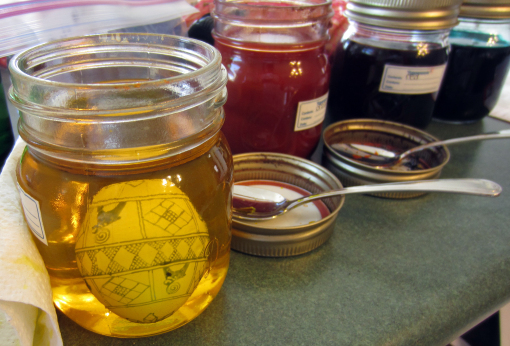

Process of Pysanky
Materials
- Egg (Chicken, Goose, or Ostrich)
- Candle
- Beeswax
- Spoon/Egg dipper
- Napkin
- Kistka
- Dyes
Steps
- Prepare your egg by cleaning it with water.
It is very common to blow out the egg. If you would like to do that:
- Make a small hole in top and the bottom of the egg with either a needle, paper clip or pin.
- Using the same poking object, shake the egg with the needle inside to breakup the yolk.
- Blow into the egg with either your own breath, or a water pick. The insides of the egg are caught in a bowl.
- Clean the egg again to begin drawing on the egg.
- Select a design that you would like to write on to your egg.
- If you are a beginner you can start by drawing out the pattern onto the egg with a pencil.
- Begin by filling the kistka with Beeswax and melting it over the candle. You want the wax to turn to liquid so it is easy to write on the egg. It is as if you are heating up hot glue, the closer to liquid is the easier.
- Write on the egg with the fine tip of the kistka on the parts that you want to stay white. Anything on the egg covered in wax will stay that color. The dye cannot penetrate the wax.
- Dye the egg in the next color you would like to use. When dyeing the egg you want to go from light colors to dark colors. The general order is: white, yellow, orange, green, red, blue, purple, brown, black. You do not have to use all the colors, which colors you choose to use depend on the design. The strength of the color brightens the longer the egg is in the dye, so keep the egg in dye longer to make it a stronger color.
- Continue to apply wax to the egg where the design indicates or where you would like. Keep dyeing with the colors you would like (light to dark) until you are satisfied with the final color.

- Get a napkin and the candle and your wax covered egg.
- Slowly heat the sides of the egg. You can see the wax start to liquidate.
- Wipe the egg to get rid of the wax and you will start to see your beautiful design.
- Continue to heat and wipe until all wax has been removed.
- Display your finished Pysanky!